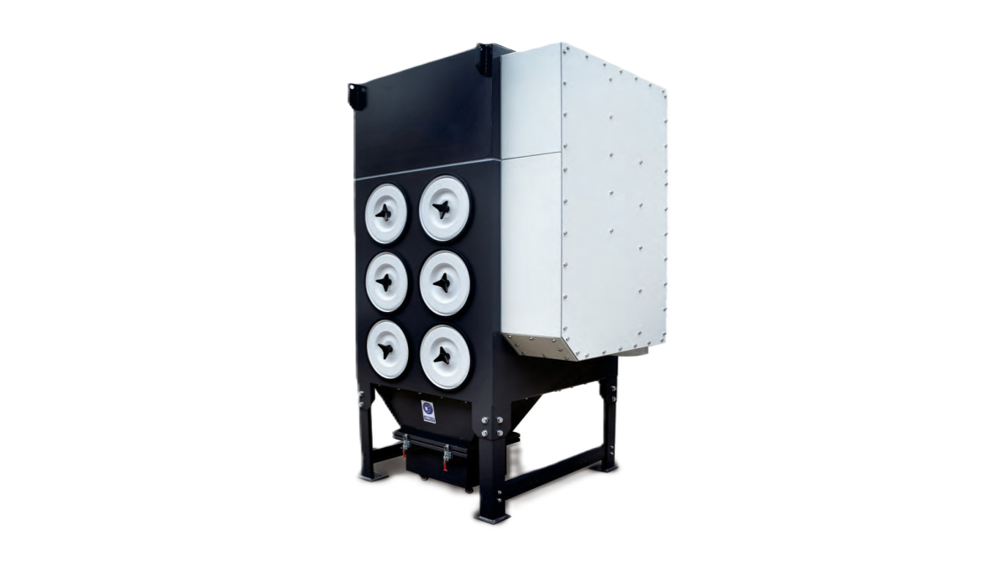

Strojevi / Filterske jedinice
Filterske jedinice
Industrijski odsis dima i prašine za fiber lasere. Siemens motor i ventilator velike usisne snage stvaraju jak podtlak, a američki HV filteri hvataju čestice.
- Modeli
- 4L · 6L · 6LS · 8L

Značajke
Čist zrak u hali
Snažan odsis
- Siemens motor
- Ventilator velike usisne snage za vrlo jak podtlak
- HV filterski sustav proizveden u SAD-u
Pametno upravljanje
- Vlastiti upravljački sustav
- Vizualno sučelje za operatera (HMI)
- Podržava EtherCAT magistralu
- Ušteda energije kroz kontrolu frekvencije
Uz vaš laser
Uz Yawei lasere isporučuje se i Donaldson filterska jedinica, veličine prema stolu: 4 bačve za 1530 i 2040, 6 za 2060 i 2560, 9 za 2580 i 12 za 25100.
Upit
Koji laser trebate odsisati?
Recite nam model i snagu lasera te format stola, pa ćemo predložiti jedinicu. Ili nazovite +385 91 111 4600.